<title>Club PPP · Identidad de Maya</title>
<meta name="claude:viewport-fit-sides" content="cover">
<meta name="robots" content="noindex">
<link rel="preconnect" href="https://fonts.googleapis.com">
<link rel="preconnect" href="https://fonts.gstatic.com" crossorigin>
<link rel="stylesheet" href="https://fonts.googleapis.com/css2?family=Bagel+Fat+One&family=Bebas+Neue&family=Montserrat:wght@400;500;600;700;800&display=swap">
<style>
/* Manual de marca que se lee como el caso de estudio: bandas a sangre de un
   color de la paleta cada una, contenido en una columna de 1080px.
   Un solo tema a proposito: la marca tiene sus colores fijos. */
:root {
  --negro: #0D0B09;
  --fuego: #C8722A;
  --crema: #F2EDE6;
  --lengua: #F28CA5;
  --lengua-osc: #D96A86;
  --parque: #1F5C45;
  --oro: #F2B544;
  --tinta-suave: #4A3F36;   /* texto secundario sobre crema, negro calentado hacia el fuego */
  --crema-suave: rgba(242, 237, 230, .72);

  --marca: 'Bagel Fat One', 'Arial Rounded MT Bold', 'Trebuchet MS', sans-serif;
  --lema: 'Bebas Neue', 'Impact', 'Arial Narrow', sans-serif;
  --texto: 'Montserrat', 'Helvetica Neue', Arial, sans-serif;

  --col: 1080px;
  color-scheme: light;
}
* { box-sizing: border-box; }
body { margin: 0; background: var(--crema); color: var(--negro); font: 500 16px/1.6 var(--texto); }
img { max-width: 100%; display: block; }

.banda { padding-block: clamp(56px, 9vw, 112px); padding-left: max(16px, env(safe-area-inset-left, 0px)); padding-right: max(16px, env(safe-area-inset-right, 0px)); }
.col { max-width: var(--col); margin: 0 auto; display: grid; gap: clamp(28px, 4vw, 48px); }
.b-negro { background: var(--negro); color: var(--crema); }
.b-fuego { background: var(--fuego); color: var(--negro); }
.b-parque { background: var(--parque); color: var(--crema); }
.b-lengua { background: var(--lengua); color: var(--negro); }
.b-crema { background: var(--crema); color: var(--negro); }

.cap { font: 400 1.05rem/1 var(--lema); letter-spacing: .14em; text-transform: uppercase; display: flex; gap: .75em; align-items: center; }
.cap b { font-weight: 400; opacity: .55; }
h1, h2, h3 { margin: 0; font-weight: 400; text-wrap: balance; }
h2 { font: 400 clamp(2.4rem, 6vw, 4.2rem)/1 var(--marca); letter-spacing: -.01em; }
h3 { font: 400 1.5rem/1.1 var(--marca); }
p { margin: 0; max-width: 62ch; }
.intro { display: grid; gap: 18px; }
.intro p { font-size: 1.08rem; }
.b-negro .intro p, .b-parque .intro p { color: var(--crema-suave); }
.nota { font-size: .86rem; color: var(--tinta-suave); }
.b-negro .nota, .b-parque .nota { color: var(--crema-suave); }

/* ── Portada ── */
.portada { position: relative; overflow: hidden; background: var(--fuego) url("svg/patron-pompones.svg") center / 360px; }
.portada .col { position: relative; }
.portada-card { background: var(--crema); border-radius: 28px; padding: clamp(28px, 5vw, 56px); display: grid; gap: 28px; justify-items: start; box-shadow: 0 18px 0 var(--negro); border: 3px solid var(--negro); }
.portada-card .logo { width: min(520px, 100%); }
.portada-card h1 { font: 400 clamp(1.7rem, 4.4vw, 2.8rem)/1.1 var(--marca); max-width: 18ch; }
.portada-card h1 em { font-style: normal; color: var(--fuego); }
.portada-card p { color: var(--tinta-suave); font-size: 1.05rem; }
.portada-iso { position: absolute; right: -10px; top: -46px; width: clamp(120px, 20vw, 220px); transform: rotate(10deg); }

/* ── Concepto ── */
.ppp { display: grid; gap: 4px; font: 400 clamp(3rem, 11vw, 8rem)/.9 var(--lema); letter-spacing: .01em; }
.ppp div { display: flex; flex-wrap: wrap; gap: 0 .25em; align-items: baseline; }
.ppp s { text-decoration-thickness: .08em; text-decoration-color: var(--fuego); color: rgba(242, 237, 230, .35); }
.ppp span { color: var(--oro); font-family: var(--marca); font-size: .78em; }
.tres { display: grid; grid-template-columns: repeat(auto-fit, minmax(240px, 1fr)); gap: 16px; }
.tres div { border-top: 3px solid var(--fuego); padding-top: 14px; display: grid; gap: 6px; align-content: start; }
.tres h3 { font-size: 1.25rem; color: var(--crema); }
.tres p { color: var(--crema-suave); font-size: .95rem; }

/* ── Logo ── */
.logo-hero { background: #fff; border-radius: 24px; padding: clamp(28px, 6vw, 72px); display: grid; place-items: center; border: 3px solid var(--negro); }
.logo-hero img { width: min(640px, 100%); }
.anatomia { display: grid; grid-template-columns: repeat(auto-fit, minmax(220px, 1fr)); gap: 16px; }
.anatomia div { display: grid; gap: 6px; align-content: start; }
.anatomia h3 { font-size: 1.15rem; }
.anatomia p { font-size: .94rem; color: var(--tinta-suave); }
.punto { display: inline-block; width: .7em; height: .7em; border-radius: 50%; background: var(--fuego); vertical-align: -.05em; }

.variantes { display: grid; grid-template-columns: repeat(auto-fit, minmax(230px, 1fr)); gap: 12px; }
.var { border-radius: 18px; aspect-ratio: 4 / 3; max-width: 100%; display: grid; place-items: center; padding: 24px; position: relative; }
.var img { max-height: 100%; width: auto; }
.var.ancho img { width: 100%; height: auto; }
.var small { position: absolute; left: 14px; bottom: 10px; font: 400 .9rem/1 var(--lema); letter-spacing: .12em; }
.v-crema { background: var(--crema); border: 2px solid rgba(13, 11, 9, .14); color: var(--tinta-suave); }
.v-negro { background: var(--negro); color: var(--crema-suave); }
.v-fuego { background: var(--fuego); color: var(--negro); }
.v-parque { background: var(--parque); color: var(--crema-suave); }
.v-lengua { background: var(--lengua); color: var(--negro); }
.v-oro { background: var(--oro); color: var(--negro); }

/* ── Personajes ── */
.personajes { display: grid; grid-template-columns: repeat(auto-fit, minmax(190px, 1fr)); gap: 14px; }
.pj { background: var(--crema); color: var(--negro); border-radius: 22px; padding: 18px 18px 22px; display: grid; gap: 8px; align-content: start; border: 3px solid var(--negro); }
.pj img { width: 100%; aspect-ratio: 1; max-width: 100%; background: var(--fondo, #fff); border-radius: 14px; padding: 10px; }
.pj .cargo { font: 400 .95rem/1 var(--lema); letter-spacing: .12em; color: var(--fuego); }
.pj h3 { font-size: 1.3rem; }
.pj p { font-size: .88rem; color: var(--tinta-suave); line-height: 1.45; }

/* ── Paleta ── */
.paleta { display: grid; grid-template-columns: repeat(6, 1fr); gap: 0; border-radius: 22px; overflow: hidden; border: 3px solid var(--negro); }
.sw { min-height: 300px; padding: 18px 14px; display: flex; flex-direction: column; justify-content: flex-end; gap: 4px; min-width: 0; }
.sw b { font: 400 1.3rem/1 var(--marca); }
.sw code { font: 600 .82rem/1.2 var(--texto); letter-spacing: .04em; }
.sw span { font-size: .78rem; line-height: 1.35; opacity: .85; }
.proporcion { display: flex; height: 22px; border-radius: 99px; overflow: hidden; border: 2px solid var(--negro); }
.proporcion i { display: block; }

/* ── Tipografia ── */
.tipos { display: grid; gap: 14px; }
.tipo { display: grid; grid-template-columns: minmax(0, 1fr) minmax(0, 1.6fr); gap: 24px; align-items: center; padding: 26px 0; border-top: 2px solid var(--negro); }
.tipo .meta { display: grid; gap: 6px; }
.tipo .meta b { font: 700 .78rem/1 var(--texto); letter-spacing: .14em; text-transform: uppercase; }
.tipo .meta p { font-size: .92rem; color: var(--tinta-suave); }
.muestra { overflow-wrap: anywhere; min-width: 0; }
.m-marca { font: 400 clamp(2.6rem, 7vw, 4.6rem)/.95 var(--marca); }
.m-lema { font: 400 clamp(2.8rem, 7.6vw, 5rem)/.92 var(--lema); letter-spacing: .01em; }
.m-texto { font: 500 1.05rem/1.6 var(--texto); }
.m-texto strong { font-weight: 800; }

/* ── Formas ── */
.formas { display: grid; grid-template-columns: repeat(5, 1fr); gap: 12px; }
.forma { display: grid; gap: 8px; justify-items: center; text-align: center; }
.forma img { width: 100%; aspect-ratio: 1; max-width: 100%; background: var(--fondo); border-radius: 18px; padding: 14%; }
.forma b { font: 400 1.05rem/1 var(--marca); }
.forma span { font-size: .8rem; color: var(--tinta-suave); line-height: 1.35; }
.patrones { display: grid; grid-template-columns: repeat(4, 1fr); gap: 12px; }
.patrones div { aspect-ratio: 1; max-width: 100%; border-radius: 18px; background-size: 50%; border: 3px solid var(--negro); }

/* ── Aplicaciones ── */
.apps { display: grid; grid-template-columns: repeat(12, 1fr); gap: 16px; }
.app { border-radius: 24px; padding: clamp(18px, 3vw, 32px); display: grid; gap: 16px; align-content: start; min-width: 0; }
.app > .cap { font-size: .95rem; }
.a-7 { grid-column: span 7; } .a-5 { grid-column: span 5; } .a-4 { grid-column: span 4; } .a-6 { grid-column: span 6; } .a-12 { grid-column: span 12; }

/* Carnet de socio: tamano tarjeta ID-1 (85,6 x 54 mm) */
.cinta { width: 46px; height: 120px; margin: 0 auto -18px; background: url("svg/patron-lenguas.svg") center / 92px; border-radius: 6px 6px 0 0; position: relative; z-index: 0; }
.carnet { position: relative; z-index: 1; width: min(440px, 100%); margin: 0 auto; aspect-ratio: 85.6 / 54; max-width: 100%; background: var(--crema); border-radius: 18px; border: 3px solid var(--negro); overflow: hidden; display: grid; grid-template-rows: auto 1fr; box-shadow: 0 10px 0 rgba(13, 11, 9, .9); }
.carnet::before { content: ""; position: absolute; top: 9px; left: 50%; width: 46px; height: 9px; margin-left: -23px; border-radius: 9px; background: var(--fuego); }
.carnet-top { background: var(--parque); color: var(--crema); padding: 22px 14px 8px; display: flex; justify-content: space-between; align-items: baseline; gap: 8px; }
.carnet-top b { font: 400 clamp(.95rem, 2.6vw, 1.2rem)/1 var(--marca); }
.carnet-top span { font: 400 clamp(.62rem, 1.8vw, .8rem)/1 var(--lema); letter-spacing: .12em; text-align: right; }
.carnet-body { display: grid; grid-template-columns: 30% 1fr; gap: 12px; padding: 10px 14px 12px; min-height: 0; }
.carnet-foto { border-radius: 10px; overflow: hidden; border: 2px solid var(--negro); background: var(--negro); min-height: 0; }
.carnet-foto img { width: 100%; height: 100%; object-fit: cover; object-position: 50% 10%; }
.carnet dl { margin: 0; display: grid; grid-template-columns: auto 1fr; gap: 1px 8px; align-content: center; font-size: clamp(.55rem, 1.7vw, .72rem); line-height: 1.3; min-width: 0; }
.carnet dt { font: 400 1.1em/1.2 var(--lema); letter-spacing: .1em; color: var(--fuego); }
.carnet dd { margin: 0; font-weight: 700; overflow-wrap: anywhere; }
.carnet-sello { position: absolute; right: 8px; bottom: 6px; width: 21%; transform: rotate(-12deg); opacity: .95; }

/* Pins y llaveros */
.pins { display: grid; grid-template-columns: repeat(2, 1fr); gap: 18px; justify-items: center; align-items: center; }
.pin { box-shadow: 0 6px 0 rgba(13, 11, 9, .85); border: 3px solid var(--negro); display: grid; place-items: center; text-align: center; max-width: 100%; }
.pin-sello { width: 150px; aspect-ratio: 1; border-radius: 50%; overflow: hidden; border-width: 0; }
.pin-team { padding: 12px 18px; border-radius: 99px; background: var(--parque); color: var(--crema); font: 400 1.6rem/1 var(--marca); transform: rotate(-6deg); }
.pin-pompon { width: 150px; aspect-ratio: 1; background: url("svg/forma-pompon.svg") center / 120% no-repeat; border: 0; box-shadow: none; font: 400 1.45rem/.95 var(--lema); filter: drop-shadow(0 6px 0 rgba(13, 11, 9, .85)); padding: 18px; }
.pin-lengua { width: 104px; height: 140px; background: var(--lengua); border-radius: 12px 12px 52px 52px; font: 400 1.1rem/1 var(--lema); padding: 10px; transform: rotate(8deg); letter-spacing: .04em; }

/* Camiseta */
.tees { display: grid; grid-template-columns: 1fr 1fr; gap: 12px; }
.tees figure { margin: 0; display: grid; gap: 8px; justify-items: center; }
.tees svg { width: 100%; height: auto; max-width: 260px; }
.tees figcaption { font: 400 .9rem/1 var(--lema); letter-spacing: .12em; }

/* Posts 4:5 */
.posts { display: grid; grid-template-columns: repeat(3, 1fr); gap: 14px; }
.post { aspect-ratio: 4 / 5; max-width: 100%; border-radius: 16px; overflow: hidden; position: relative; display: grid; padding: 7%; border: 3px solid var(--negro); }
.post-socios { background: var(--fuego) url("svg/patron-pompones.svg") center / 70%; align-content: space-between; }
.post-socios .placa { background: var(--crema); border: 3px solid var(--negro); border-radius: 16px; padding: 8% 7%; display: grid; gap: 6px; transform: rotate(-3deg); }
.post-socios .placa b { font: 400 clamp(1.4rem, 3.4vw, 2.3rem)/.95 var(--marca); }
.post-socios .placa span { font: 400 clamp(.75rem, 1.6vw, 1rem)/1.1 var(--lema); letter-spacing: .1em; color: var(--parque); }
.post-socios img { width: 62%; justify-self: center; }
.post-ficha { background: var(--parque); color: var(--crema); align-content: start; gap: 8px; }
.post-ficha .tag { justify-self: start; background: var(--oro); color: var(--negro); border-radius: 99px; padding: 4px 12px; font: 400 clamp(.7rem, 1.5vw, .95rem)/1.2 var(--lema); letter-spacing: .1em; }
.post-ficha h4 { margin: 0; font: 400 clamp(1.4rem, 3.4vw, 2.3rem)/.95 var(--marca); color: var(--crema); }
.post-ficha .foto { border-radius: 12px; overflow: hidden; border: 3px solid var(--crema); aspect-ratio: 5 / 4; max-width: 100%; }
.post-ficha .foto img { width: 100%; height: 100%; object-fit: cover; object-position: 50% 12%; }
.post-ficha p { font: 600 clamp(.62rem, 1.3vw, .82rem)/1.35 var(--texto); color: var(--crema-suave); }
.post-ficha p b { color: var(--lengua); font-weight: 700; }
.post-frase { background: var(--negro); color: var(--crema); align-content: center; gap: 14px; }
.post-frase::before { content: ""; position: absolute; inset: 0 0 auto; height: 16%; background: url("svg/patron-cejas.svg") 0 0 / 30%; }
.post-frase q { quotes: none; font: 400 clamp(2rem, 5.2vw, 3.6rem)/.9 var(--lema); }
.post-frase q em { font-style: normal; color: var(--lengua); }
.post-frase .firma { display: flex; gap: 8px; align-items: center; font: 400 clamp(.8rem, 1.6vw, 1rem)/1 var(--marca); }
.post-frase .firma img { width: 30px; }

/* Avatar */
.avatares { display: flex; flex-wrap: wrap; gap: 18px; align-items: center; }
.avatar { width: 96px; aspect-ratio: 1; border-radius: 50%; overflow: hidden; border: 3px solid var(--negro); }
.avatar.peq { width: 48px; } .avatar.mini { width: 28px; border-width: 2px; }
.perfil { display: grid; gap: 2px; }
.perfil b { font: 700 1rem/1.2 var(--texto); }
.perfil span { font-size: .85rem; color: var(--crema-suave); }

/* ── Reglas ── */
.reglas { display: grid; grid-template-columns: repeat(auto-fit, minmax(260px, 1fr)); gap: 12px; }
.regla { background: #fff; border-radius: 18px; padding: 20px; display: grid; gap: 6px; border: 2px solid rgba(13, 11, 9, .14); align-content: start; }
.regla h3 { font-size: 1.15rem; }
.regla p { font-size: .92rem; color: var(--tinta-suave); }
.regla.no h3 { color: var(--lengua-osc); }

footer { background: var(--negro); color: var(--crema-suave); padding-block: 40px; padding-left: max(16px, env(safe-area-inset-left, 0px)); padding-right: max(16px, env(safe-area-inset-right, 0px)); font-size: .85rem; }
footer .col { display: flex; flex-wrap: wrap; gap: 16px; justify-content: space-between; align-items: center; }
footer img { width: 120px; }

@media (max-width: 900px) {
  .a-7, .a-5, .a-4, .a-6 { grid-column: span 12; }
  .paleta { grid-template-columns: repeat(3, 1fr); }
  .sw { min-height: 180px; }
  .formas { grid-template-columns: repeat(3, 1fr); }
  .patrones { grid-template-columns: repeat(2, 1fr); }
  .tipo { grid-template-columns: 1fr; gap: 12px; }
}
@media (max-width: 560px) {
  .posts { grid-template-columns: 1fr; max-width: 360px; margin: 0 auto; width: 100%; }
  .post-socios .placa b, .post-ficha h4 { font-size: 2rem; }
  .post-frase q { font-size: 3rem; }
  .paleta { grid-template-columns: repeat(2, 1fr); }
  .formas { grid-template-columns: repeat(2, 1fr); }
  .portada-iso { top: -30px; right: -18px; }
}
@media (prefers-reduced-motion: no-preference) {
  .pj img, .forma img { transition: transform .35s cubic-bezier(.22, 1, .36, 1); }
  .pj:hover img { transform: rotate(-4deg) scale(1.04); }
  .forma:hover img { transform: rotate(6deg); }
}
</style>

<!-- Portada -->
<header class="banda portada">
  <div class="col">
    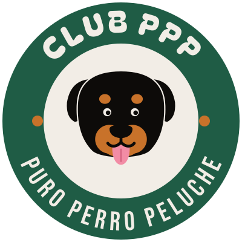
    <div class="portada-card">
      <span class="cap">Identidad visual <b>/</b> propuesta 01</span>
      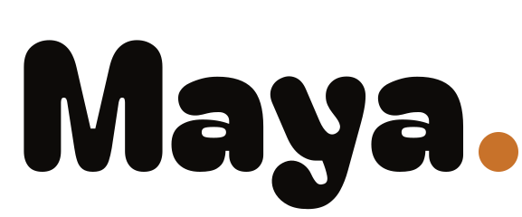
      <h1>Nadie debería tenerle miedo a un perro <em>por su raza.</em></h1>
      <p>Maya ya tiene la voz, la causa y 46.000 personas detrás. Le faltaba una imagen propia: un logo, una cara y un sistema que se pueda llevar puesto. Esta es la propuesta.</p>
    </div>
  </div>
</header>

<!-- Concepto -->
<section class="banda b-negro">
  <div class="col">
    <div class="intro">
      <span class="cap" style="color:var(--fuego)">01 <b>/</b> Concepto</span>
      <h2>Un club, no un perfil.</h2>
      <p>La newsletter ya promete que «los del club entran primero». Llevamos esa idea hasta el final: Maya preside un club al que se apuntan los perros con mala fama y la gente que los quiere. Las siglas que la ley usa para señalarlos pasan a ser el nombre del club.</p>
    </div>
    <div class="ppp" aria-label="P P P: Potencialmente Peligroso pasa a ser Puro Perro Peluche">
      <div><s>Potencialmente</s> <span>Puro</span></div>
      <div><s>Peligroso</s> <span>Perro</span></div>
      <div><s>Perro</s> <span>Peluche</span></div>
    </div>
    <div class="tres">
      <div><h3>La burocracia, convertida en orgullo</h3><p>Licencia, registro, seguro y bozal son el día a día de un dueño PPP. El club los convierte en carnet de socio, número de registro e insignias.</p></div>
      <div><h3>Actitud de calle, cara de peluche</h3><p>Se mantiene la base negra y fuego de la web, y se le suma una cara amable y colores con energía. Nada de clipart de corazones.</p></div>
      <div><h3>Todas las razas de la lista</h3><p>Maya es la presidenta, pero el club es de todos los PPP. Cada raza tiene su personaje y su cargo, y así cualquier dueño se siente dentro.</p></div>
    </div>
  </div>
</section>

<!-- Logo -->
<section class="banda b-crema">
  <div class="col">
    <div class="intro">
      <span class="cap">02 <b>/</b> Logotipo e isotipo</span>
      <h2>Gorda, blanda y con punto.</h2>
      <p>El nombre va en una letra redonda y pesada, como un perro de 40 kilos que se te tumba encima. El punto final es fuego: es la ceja de Rottweiler, y el mismo punto que remata cada frase de la marca.</p>
    </div>
    <div class="logo-hero">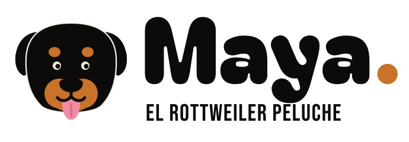</div>
    <div class="anatomia">
      <div><h3><span class="punto"></span> Las cejas</h3><p>Las dos manchas fuego encima de los ojos son lo que distingue a un Rottweiler a primera vista. Son el rasgo que hace que el isotipo sea Maya y no un perro cualquiera.</p></div>
      <div><h3>La lengua fuera</h3><p>Es el «peluche» de la marca y su único toque rosa. Le quita al isotipo cualquier lectura agresiva sin hacerlo cursi.</p></div>
      <div><h3>El sello del club</h3><p>Para lo que se lleva puesto y para la tienda: el isotipo dentro de un aro con «Club PPP» y «Puro Perro Peluche».</p></div>
    </div>
    <div class="variantes">
      <div class="var v-crema">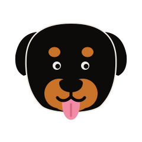<small>Color · fondo claro</small></div>
      <div class="var v-negro">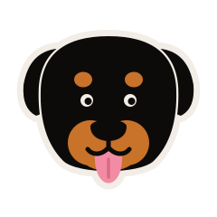<small>Pegatina · fondo oscuro</small></div>
      <div class="var v-fuego">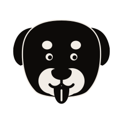<small>Una tinta</small></div>
      <div class="var v-parque"><small>Sello del club</small></div>
      <div class="var v-negro ancho"><small>Logotipo · crema</small></div>
      <div class="var v-lengua ancho">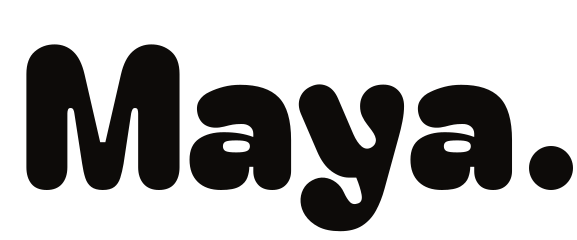<small>Logotipo · una tinta</small></div>
      <div class="var v-oro">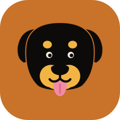<small>Favicon y avatar</small></div>
      <div class="var v-negro ancho"><small>Horizontal · oscuro</small></div>
    </div>
  </div>
</section>

<!-- Personajes -->
<section class="banda b-lengua">
  <div class="col">
    <div class="intro">
      <span class="cap">03 <b>/</b> Personajes</span>
      <h2>La junta directiva.</h2>
      <p>Cinco razas de la lista PPP (RD 287/2002), dibujadas con el mismo esqueleto que el isotipo para que se lean como familia. Cada una tiene su cargo y su forma de estar en el club. Sirven para stickers, posts, merch y para presentar contenido por temas.</p>
    </div>
    <div class="personajes">
      <article class="pj">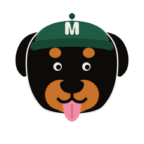<span class="cargo">Presidenta</span><h3>Maya</h3><p>Rottweiler, 40 kg. Abre cada reunión con la lengua fuera. Firma los carnets.</p></article>
      <article class="pj">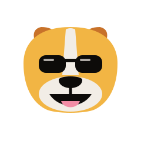<span class="cargo">Relaciones públicas</span><h3>El Pit</h3><p>American Pit Bull. Sonríe a todo el que cruza de acera. Gafas puestas siempre.</p></article>
      <article class="pj">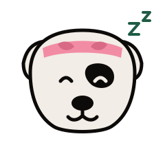<span class="cargo">Jefe de siestas</span><h3>El Dogo</h3><p>Dogo Argentino. Su mayor peligro es quedarse con tu lado del sofá.</p></article>
      <article class="pj">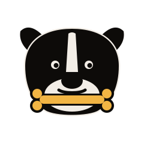<span class="cargo">Tesorera de chuches</span><h3>La Staffy</h3><p>Staffordshire Bull Terrier. Lleva las cuentas del club en huesos.</p></article>
      <article class="pj">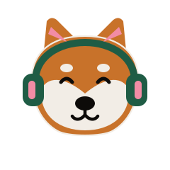<span class="cargo">DJ de los paseos</span><h3>El Akita</h3><p>Akita Inu. Pone la música del paseo de las ocho y no pierde la calma.</p></article>
    </div>
  </div>
</section>

<!-- Paleta -->
<section class="banda b-crema">
  <div class="col">
    <div class="intro">
      <span class="cap">04 <b>/</b> Paleta</span>
      <h2>Los colores de Maya, y tres más.</h2>
      <p>Negro, fuego y crema ya son la web: se quedan como base. Para el club se suman tres colores sacados del propio perro y de sus paseos, para que la marca pueda ser alegre sin dejar de ser suya.</p>
    </div>
    <div class="paleta">
      <div class="sw" style="background:var(--negro);color:var(--crema)"><b>Negro Rott</b><code>#0D0B09</code><span>El pelo. Base de la ropa y de los fondos.</span></div>
      <div class="sw" style="background:var(--fuego);color:var(--negro)"><b>Fuego</b><code>#C8722A</code><span>Las cejas y el hocico. El acento.</span></div>
      <div class="sw" style="background:var(--crema);color:var(--negro);box-shadow:inset 0 0 0 1px rgba(13,11,9,.1)"><b>Crema</b><code>#F2EDE6</code><span>El blanco roto. Papel y textos.</span></div>
      <div class="sw" style="background:var(--lengua);color:var(--negro)"><b>Lengua</b><code>#F28CA5</code><span>Nueva. El peluche, en dosis pequeñas.</span></div>
      <div class="sw" style="background:var(--parque);color:var(--crema)"><b>Parque</b><code>#1F5C45</code><span>Nueva. El verde del club y sus carnets.</span></div>
      <div class="sw" style="background:var(--oro);color:var(--negro)"><b>Oro</b><code>#F2B544</code><span>Nueva. Chuches, premios, destacados.</span></div>
    </div>
    <div class="intro">
      <span class="cap">Proporción de uso</span>
      <div class="proporcion" role="img" aria-label="Negro 40%, crema 25%, fuego 15%, parque 10%, lengua 5%, oro 5%">
        <i style="flex:40;background:var(--negro)"></i><i style="flex:25;background:var(--crema)"></i><i style="flex:15;background:var(--fuego)"></i><i style="flex:10;background:var(--parque)"></i><i style="flex:5;background:var(--lengua)"></i><i style="flex:5;background:var(--oro)"></i>
      </div>
      <p class="nota">Negro y crema mandan; fuego acompaña; parque, lengua y oro aparecen en detalles, piezas del club y redes. Texto pequeño solo en negro sobre claro o crema sobre oscuro.</p>
    </div>
  </div>
</section>

<!-- Tipografia -->
<section class="banda b-crema" style="padding-top:0">
  <div class="col">
    <div class="intro">
      <span class="cap">05 <b>/</b> Tipografía</span>
      <h2>Una para el nombre, otra para gritar.</h2>
      <p>Bebas Neue y Montserrat ya están en la web y se quedan. Entra Bagel Fat One para el nombre y los titulares cortos. Las tres son gratuitas (Google Fonts), así que cualquiera que haga una pieza puede usarlas.</p>
    </div>
    <div class="tipos">
      <div class="tipo"><div class="meta"><b>Bagel Fat One · marca</b><p>Logo, titulares de dos a seis palabras, nombres de personajes. Siempre en minúscula y mayúscula, nunca todo en mayúsculas.</p></div><div class="muestra m-marca">Se buscan socios.</div></div>
      <div class="tipo"><div class="meta"><b>Bebas Neue · lema</b><p>Frases de camiseta, carteles, etiquetas y datos del carnet. Siempre en mayúsculas, con algo de aire entre letras en tamaños pequeños.</p></div><div class="muestra m-lema">PELIGROSO SEGÚN LA LEY. NO SEGÚN MI SOFÁ.</div></div>
      <div class="tipo"><div class="meta"><b>Montserrat · texto</b><p>Párrafos, guías, descripciones de producto. Medium para leer, ExtraBold para destacar.</p></div><div class="muestra m-texto">Maya es una Rottweiler de 5 años y 40 kg que demuestra cada día que los perros PPP no son lo que la gente cree. <strong>Adopta, no compres.</strong></div></div>
    </div>
  </div>
</section>

<!-- Formas -->
<section class="banda b-parque">
  <div class="col">
    <div class="intro">
      <span class="cap" style="color:var(--oro)">06 <b>/</b> Formas y patrones</span>
      <h2>Cinco formas para jugar.</h2>
      <p>Salen del isotipo y del día a día de un perro. Se combinan entre sí y con la paleta para fondos, envoltorios, forros de gorra, cintas de carnet o el papel de seda de la tienda.</p>
    </div>
    <div class="formas">
      <div class="forma">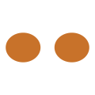<b>Las cejas</b><span style="color:var(--crema-suave)">El rasgo Rottweiler</span></div>
      <div class="forma"><b>La lengua</b><span style="color:var(--crema-suave)">El peluche</span></div>
      <div class="forma">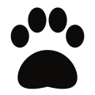<b>La huella</b><span style="color:var(--crema-suave)">Firma del socio</span></div>
      <div class="forma"><b>El pompón</b><span style="color:var(--crema-suave)">Lo blandito</span></div>
      <div class="forma"><b>El hueso</b><span style="color:var(--crema-suave)">La recompensa</span></div>
    </div>
    <div class="patrones" role="img" aria-label="Cuatro patrones: cejas sobre negro, lenguas sobre verde, pompones sobre fuego y huellas sobre rosa">
      <div style="background-image:url('svg/patron-cejas.svg')"></div>
      <div style="background-image:url('svg/patron-lenguas.svg')"></div>
      <div style="background-image:url('svg/patron-pompones.svg')"></div>
      <div style="background-image:url('svg/patron-huellas.svg')"></div>
    </div>
  </div>
</section>

<!-- Aplicaciones -->
<section class="banda b-crema">
  <div class="col">
    <div class="intro">
      <span class="cap">07 <b>/</b> Aplicaciones</span>
      <h2>Lo que se lleva puesto.</h2>
      <p>El sistema funcionando en las piezas que más se van a ver: el carnet de socio, la merch de la tienda y las redes.</p>
    </div>
    <div class="apps">
      <div class="app a-7" style="background:var(--oro)">
        <span class="cap">Carnet de socio · licencia PPP</span>
        <div>
          <div class="cinta" aria-hidden="true"></div>
          <div class="carnet">
            <div class="carnet-top"><b>Club PPP</b><span>Licencia de Puro<br>Perro Peluche</span></div>
            <div class="carnet-body">
              <div class="carnet-foto">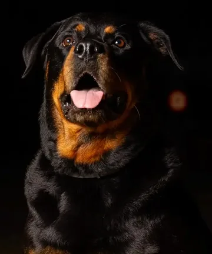</div>
              <dl>
                <dt>Nombre</dt><dd>Maya</dd>
                <dt>Raza</dt><dd>Rottweiler</dd>
                <dt>Peso</dt><dd>40 kg de peluche</dd>
                <dt>Peligro</dt><dd>Solo para las chuches</dd>
                <dt>Cargo</dt><dd>Presidenta</dd>
                <dt>Nº socia</dt><dd>PPP-0001</dd>
              </dl>
            </div>
            
          </div>
        </div>
        <p class="nota" style="color:var(--negro)">Tamaño tarjeta (85,6 × 54 mm). Para el Pack Fundadores de la tienda, para sortear en eventos o en versión digital con el nombre y la foto de cada perro.</p>
      </div>
      <div class="app a-5" style="background:var(--negro);color:var(--crema)">
        <span class="cap">Pins y llaveros</span>
        <div class="pins">
          <div class="pin pin-sello"></div>
          <div class="pin pin-team">Team PPP</div>
          <div class="pin pin-pompon" style="color:var(--negro)">40 KG DE<br>PELUCHE</div>
          <div class="pin pin-lengua" style="color:var(--negro)">ADOPTA,<br>NO<br>COMPRES</div>
        </div>
      </div>
      <div class="app a-6" style="background:var(--fuego)">
        <span class="cap">Camiseta del club · delante y detrás</span>
        <div class="tees">
          <figure>
            <svg viewBox="0 0 280 300" role="img" aria-label="Camiseta negra con el isotipo pequeño en el pecho">
              <path d="M62 22 L112 4 Q140 26 168 4 L218 22 L274 78 L236 112 L214 92 L214 296 L66 296 L66 92 L44 112 L6 78 Z" fill="#0D0B09" stroke="#0D0B09" stroke-width="4" stroke-linejoin="round"/>
              <path d="M112 4 Q140 26 168 4" fill="none" stroke="#2A231D" stroke-width="6"/>
              <image href="svg/isotipo-pegatina.svg" x="166" y="66" width="36" height="36"/>
            </svg>
            <figcaption>Delante · isotipo en el pecho</figcaption>
          </figure>
          <figure>
            <svg viewBox="0 0 280 300" role="img" aria-label="Espalda de la camiseta con el sello y el lema Puro Perro Peluche">
              <path d="M62 22 L112 4 Q140 14 168 4 L218 22 L274 78 L236 112 L214 92 L214 296 L66 296 L66 92 L44 112 L6 78 Z" fill="#0D0B09" stroke="#0D0B09" stroke-width="4" stroke-linejoin="round"/>
              <image href="svg/sello-club-ppp.svg" x="90" y="52" width="100" height="100"/>
              <text x="140" y="196" text-anchor="middle" font-family="Bebas Neue, Impact, sans-serif" font-size="34" fill="#F2EDE6" letter-spacing="1">PELIGROSO SEGÚN</text>
              <text x="140" y="228" text-anchor="middle" font-family="Bebas Neue, Impact, sans-serif" font-size="34" fill="#F2EDE6" letter-spacing="1">LA LEY. NO SEGÚN</text>
              <text x="140" y="260" text-anchor="middle" font-family="Bebas Neue, Impact, sans-serif" font-size="34" fill="#F28CA5" letter-spacing="1">MI SOFÁ.</text>
            </svg>
            <figcaption>Espalda · sello y lema</figcaption>
          </figure>
        </div>
        <p class="nota" style="color:var(--negro)">Tres tintas como máximo (crema, verde, rosa), sin degradados. Encaja con lo que pide el brief para serigrafía y DTG.</p>
      </div>
      <div class="app a-6" style="background:var(--negro);color:var(--crema)">
        <span class="cap">Perfil en redes</span>
        <div class="avatares">
          
          <div class="perfil"><b>maya.rottweiler13</b><span>Presidenta del Club PPP · Puro Perro Peluche</span></div>
        </div>
        <div class="avatares">
          
          
          <span class="nota" style="color:var(--crema-suave)">El mismo icono sirve de favicon de mayarottweiler.com, que ahora es un emoji.</span>
        </div>
      </div>
      <div class="app a-12" style="background:#fff;border:2px solid rgba(13,11,9,.14)">
        <span class="cap">Posts · 4:5</span>
        <div class="posts">
          <div class="post post-socios">
            <div class="placa"><b>Se buscan socios.</b><span>Club PPP · inscripción: adopta, no compres</span></div>
            
          </div>
          <div class="post post-ficha">
            <span class="tag">FICHA OFICIAL</span>
            <h4>Socia del mes</h4>
            <div class="foto"></div>
            <p>Maya · Rottweiler · 40 kg<br><b>Peligro:</b> se queda con tu sitio del sofá.</p>
          </div>
          <div class="post post-frase">
            <q>PELIGROSO SEGÚN LA LEY. <em>NO SEGÚN MI SOFÁ.</em></q>
            <div class="firma">Maya.</div>
          </div>
        </div>
      </div>
    </div>
  </div>
</section>

<!-- Reglas -->
<section class="banda b-crema" style="padding-top:0">
  <div class="col">
    <div class="intro">
      <span class="cap">08 <b>/</b> Reglas rápidas</span>
      <h2>Para que no se rompa.</h2>
    </div>
    <div class="reglas">
      <div class="regla"><h3>Sí: un acento por pieza</h3><p>Negro o crema de base y un solo color fuerte encima. Lengua y oro, en detalles.</p></div>
      <div class="regla"><h3>Sí: el isotipo con la lengua fuera</h3><p>Es lo que lo hace amable. Si una pieza va a una sola tinta, la lengua se mantiene en la silueta.</p></div>
      <div class="regla no"><h3>No: dientes, cadenas, pinchos</h3><p>Nada que suene a «perro peligroso» ni a guardia. El mensaje es anti-estigma, no «mi perro puede contigo».</p></div>
      <div class="regla no"><h3>No: corazones y clipart</h3><p>El club tiene humor y actitud, no es merch de «perritos monos».</p></div>
      <div class="regla no"><h3>No: cachorros a la venta</h3><p>Ni un guiño a la cría. La inscripción al club es siempre la misma: adopta, no compres.</p></div>
      <div class="regla"><h3>Sí: reutilizar los SVG</h3><p>Todo sale de <code>herramientas/generar-identidad.py</code>. Para un cambio de color o forma, se toca ahí y se regeneran todas las piezas.</p></div>
    </div>
  </div>
</section>

<footer>
  <div class="col">
    
    <span>Club PPP · Puro Perro Peluche · Propuesta de identidad, octubre 2026</span>
  </div>
</footer>
